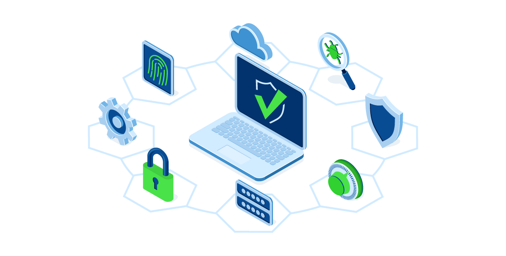

Digital Educa
Explorando a Internet com Segurança!
Gostou do nosso site? Deixe seu feedback aqui.
Segurança Digital
A segurança digital tornou-se uma preocupação fundamental na era da tecnologia, à medida que dependemos cada vez mais de dispositivos conectados e dados online. Com o aumento das ameaças cibernéticas, desde ataques de malware até violações de dados em larga escala, a proteção dos sistemas e informações pessoais é essencial. Estratégias como criptografia, autenticação multifatorial e conscientização sobre phishing desempenham papéis cruciais na defesa contra ameaças digitais.


Conceito de Segurança Digital
A segurança digital refere-se à prática de proteger sistemas, redes, programas e dados contra ataques digitais. Esse conceito engloba um conjunto de técnicas e medidas destinadas a proteger informações e garantir a integridade, confidencialidade e disponibilidade dos dados. A segurança digital é vital em um mundo onde transações financeiras, comunicações pessoais e operações empresariais dependem cada vez mais da tecnologia.
Os principais componentes da segurança digital incluem a proteção contra malware, a implementação de firewalls, o uso de criptografia para proteger dados sensíveis, e a adoção de autenticação multifatorial para assegurar que apenas usuários autorizados possam acessar determinados recursos. Além disso, políticas de segurança rigorosas e a educação dos usuários sobre práticas seguras, como o reconhecimento de tentativas de phishing e a importância de senhas fortes, são cruciais para criar uma cultura de segurança.
A segurança digital também abrange a resposta a incidentes, que envolve a detecção, contenção e mitigação de ataques cibernéticos. Organizações devem estar preparadas para lidar com eventuais violações e ter planos de recuperação de desastres para minimizar danos e restabelecer operações normais rapidamente.
Em suma, a segurança digital é um campo complexo e em constante evolução, refletindo a necessidade de proteger nossas interações e informações em um mundo cada vez mais interconectado.
Objetivos
-
Integridade: Assegurar que os dados não sejam alterados de forma não autorizada. Isso significa proteger a precisão e a consistência dos dados ao longo de seu ciclo de vida.
-
Confidencialidade: Garantir que as informações sejam acessíveis apenas por pessoas autorizadas. Isso envolve o uso de técnicas como criptografia para proteger os dados contra acesso não autorizado.
-
Disponibilidade: Assegurar que os sistemas e dados estejam disponíveis para uso quando necessário. Isso implica proteger contra ataques que possam causar interrupções, como os ataques de negação de serviço (DoS).
Principais Ameaças
As principais ameaças à segurança digital são variadas e constantemente evoluem, refletindo a sofisticação crescente dos atacantes e a expansão das superfícies de ataque. Entre as ameaças mais comuns e perigosas estão:
-
Malwares: Programas maliciosos, como vírus, worms, ransomware e spyware, projetados para danificar, roubar ou sequestrar dados. O ransomware, em particular, pode criptografar dados críticos, exigindo pagamento para liberar os arquivos.
-
Phishing: Ataques de engenharia social onde os invasores se passam por entidades confiáveis para enganar indivíduos e obter informações sensíveis, como senhas e detalhes de cartões de crédito. Phishing é frequentemente realizado via e-mail, mas também pode ocorrer através de mensagens de texto e redes sociais.
-
Ataques de Negação de Serviço (DoS) e Distribuídos de Negação de Serviço (DDoS): Estes ataques visam sobrecarregar servidores, redes ou sites com um volume massivo de tráfego, tornando-os indisponíveis para usuários legítimos. Isso pode causar interrupções significativas em serviços online.
-
Ataques de Dia Zero: Explorações de vulnerabilidades desconhecidas ou não corrigidas em software ou hardware. Como não há defesa pré-existente para essas vulnerabilidades, elas podem ser extremamente perigosas até que uma solução seja desenvolvida.
-
Ataques Man-in-the-Middle (MitM): Interceptação de comunicações entre duas partes para espionar, modificar ou roubar dados. Estes ataques podem ocorrer em redes Wi-Fi não seguras ou através de softwares maliciosos que redirecionam tráfego de internet.
-
Exfiltração de Dados: Roubo de dados sensíveis por agentes internos ou externos. Isso pode incluir informações pessoais, financeiras ou propriedade intelectual, que podem ser vendidas ou usadas para fins maliciosos.
-
Fraude de Identidade: Uso não autorizado de informações pessoais para fraudes financeiras, acesso a sistemas seguros ou outras atividades ilegais. Esse tipo de ameaça pode resultar em danos financeiros e perda de reputação para as vítimas.
-
Ataques à Cadeia de Suprimentos: Comprometimento de sistemas ou software através de terceiros, como fornecedores de software ou serviços. Estes ataques podem introduzir vulnerabilidades em um ambiente seguro através de atualizações ou software aparentemente legítimos.
A conscientização sobre essas ameaças e a implementação de medidas de segurança robustas, como a utilização de firewalls, criptografia, autenticação multifatorial, e a realização de treinamentos regulares de segurança para funcionários, são essenciais para mitigar os riscos e proteger os sistemas e dados contra essas ameaças cibernéticas.
Medidas de Segurança
Para garantir a segurança digital, é fundamental adotar uma série de medidas de proteção que abrangem tanto aspectos técnicos quanto comportamentais. Uma das principais estratégias é a utilização de firewalls, que atuam como barreiras entre redes seguras e redes externas, bloqueando acessos não autorizados e tráfego malicioso. Complementarmente, a criptografia é essencial para proteger dados em trânsito e em repouso, tornando as informações indecifráveis para aqueles que não possuem a chave de decriptação adequada.
A autenticação multifatorial (MFA) é outra medida crucial, exigindo que os usuários forneçam duas ou mais formas de verificação antes de obter acesso a sistemas ou dados. Isso pode incluir combinações de senhas, tokens de segurança, biometria ou códigos enviados por SMS. Além disso, é vital manter os sistemas e softwares sempre atualizados, aplicando patches de segurança regularmente para corrigir vulnerabilidades conhecidas.
A educação e conscientização dos usuários também desempenham um papel essencial na segurança digital. Treinamentos regulares sobre práticas seguras, como a identificação de tentativas de phishing e a importância de senhas fortes e únicas, ajudam a criar uma cultura de segurança dentro das organizações. A realização de backups regulares e a implementação de estratégias de recuperação de desastres garantem que, em caso de ataque ou falha de sistema, os dados possam ser rapidamente restaurados e as operações retomadas com o mínimo de interrupção.
A segmentação de redes é outra prática recomendada, limitando o acesso a diferentes partes da rede com base na necessidade e nas funções dos usuários. Isso minimiza o impacto de um possível ataque, impedindo que invasores se movimentem livremente dentro da rede. O monitoramento contínuo de sistemas e redes, utilizando ferramentas de detecção de intrusão e análise de comportamento, permite a identificação e resposta rápida a atividades suspeitas.
Por fim, a implementação de políticas de segurança rigorosas, que definem claramente os procedimentos e responsabilidades relacionados à segurança digital, é essencial. Isso inclui a gestão de privilégios de acesso, garantindo que os usuários tenham apenas os direitos necessários para desempenhar suas funções, e a realização de auditorias regulares para verificar a conformidade com essas políticas.
Em resumo, a segurança digital eficaz exige uma abordagem multifacetada, combinando tecnologias avançadas, processos rigorosos e uma cultura de conscientização e responsabilidade. Adotar essas medidas de segurança é crucial para proteger informações sensíveis e garantir a integridade e a continuidade das operações em um ambiente digital cada vez mais desafiador.
Conformidade e Regulamentações
A conformidade com regulamentações de segurança digital é fundamental para garantir que as organizações sigam práticas padronizadas de proteção de dados e privacidade. Isso minimiza riscos e atende a requisitos legais impostos por diferentes jurisdições. Diversas regulamentações globais foram estabelecidas para proteger informações sensíveis e garantir a segurança dos sistemas digitais, impondo penalidades severas para violações.
O Regulamento Geral sobre a Proteção de Dados (GDPR) da União Europeia é uma das regulamentações mais conhecidas. O GDPR estabelece normas rigorosas para a coleta, armazenamento e processamento de dados pessoais, exigindo consentimento explícito dos indivíduos para o processamento de seus dados, o direito de acesso e retificação, e a notificação obrigatória de violações de dados às autoridades e às pessoas afetadas. A não conformidade pode resultar em multas substanciais, incentivando as organizações a aderirem estritamente às suas diretrizes.
Nos Estados Unidos, a Lei de Portabilidade e Responsabilidade de Seguros de Saúde (HIPAA) e a Lei Sarbanes-Oxley (SOX) são exemplos de regulamentações que abordam aspectos de segurança digital. A HIPAA define padrões para a proteção de informações médicas, exigindo medidas de segurança rigorosas para garantir a confidencialidade, integridade e disponibilidade dos dados dos pacientes. A SOX, focada na transparência financeira, também implica na necessidade de controles internos rigorosos para proteger dados financeiros, afetando a segurança digital indiretamente.
Além das regulamentações específicas de países ou regiões, normas internacionais como a ISO/IEC 27001 desempenham um papel crucial. Esta norma define os requisitos para estabelecer, implementar, manter e melhorar continuamente um sistema de gestão de segurança da informação (SGSI). A adesão a essa norma ajuda as organizações a gerenciar a segurança dos ativos de informação, incluindo dados financeiros, propriedade intelectual e informações de funcionários. Implementar práticas de conformidade não apenas ajuda a evitar multas e sanções, mas também fortalece a confiança de clientes e parceiros, demonstrando um compromisso firme com a proteção de dados e a segurança digital.
Tendências Futuras
As tendências futuras da segurança digital prometem transformar o cenário cibernético de maneira significativa. Com a expansão da Internet das Coisas (IoT), espera-se um aumento exponencial no número de dispositivos conectados, ampliando as superfícies de ataque e exigindo abordagens mais abrangentes de proteção. Ao mesmo tempo, a integração da inteligência artificial (IA) e machine learning na segurança cibernética está revolucionando a capacidade de detecção e resposta a ameaças, permitindo identificar padrões e comportamentos suspeitos em tempo real e mitigar ataques de forma proativa.
Outro aspecto crucial é a crescente preocupação com a privacidade e proteção de dados, impulsionada por regulamentações como o GDPR na União Europeia e a LGPD no Brasil. Essas normas estabelecem padrões rigorosos para o tratamento de informações pessoais e exigem maior transparência e responsabilidade por parte das organizações no gerenciamento de dados dos usuários. Espera-se que essa tendência continue a ganhar destaque, com um foco crescente na ética e na governança dos dados.
Além disso, a convergência de tecnologias emergentes, como blockchain e segurança quântica, está promovendo avanços significativos na segurança digital. O blockchain oferece uma abordagem descentralizada e transparente para armazenamento e compartilhamento de dados, enquanto a segurança quântica visa proteger sistemas de comunicação contra ameaças de computação quântica. Essas inovações têm o potencial de redefinir os paradigmas de segurança cibernética, tornando os sistemas mais resilientes e protegidos contra ameaças avançadas.
Por fim, a colaboração entre organizações e setores se torna cada vez mais importante na luta contra ameaças cibernéticas. A troca de informações e a cooperação estratégica entre entidades públicas e privadas permitem uma resposta mais eficaz a incidentes de segurança, ajudando a identificar e neutralizar ameaças em tempo hábil. Espera-se que essa colaboração continue a se fortalecer, impulsionada pela necessidade de enfrentar desafios cada vez mais complexos e sofisticados no campo da segurança digital.
Recuperação e Resposta a Incidentes
Responder a incidentes de segurança é como ter um plano de ação para quando algo ruim acontece no mundo digital. Antes mesmo de qualquer problema, é importante estar preparado, treinando as pessoas e planejando o que fazer. Se algo der errado, é essencial detectar o problema rapidamente e agir logo para limitar os danos.
Quando ocorre um incidente, é como se houvesse um incêndio digital: precisamos isolar o problema, reunir provas, avisar as pessoas importantes e tentar controlar a situação. A comunicação é crucial para manter a confiança das pessoas enquanto lidamos com o problema.
Depois que o problema é resolvido e tudo volta ao normal, é como se fizéssemos uma análise para entender o que aconteceu e como podemos evitar que isso aconteça de novo. É como aprender com os erros para ficarmos mais fortes e protegermos melhor nossos dados no futuro.
Criadores:
Alyson e Renan